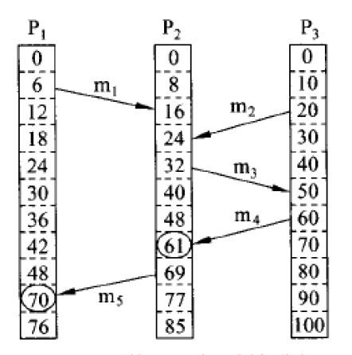
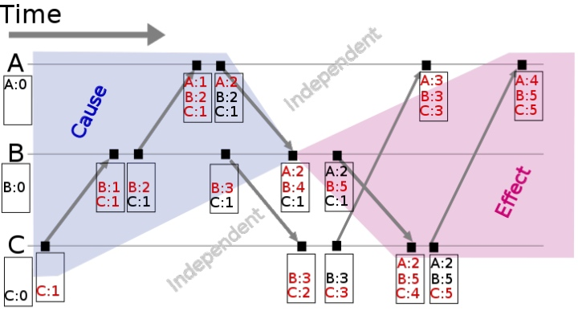
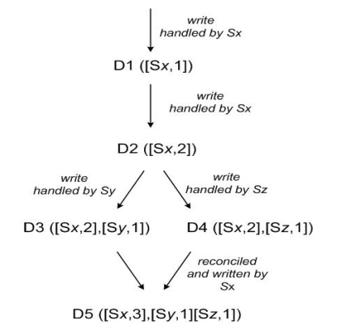

在上一篇文章分布式系统：Lamport 逻辑时钟中我们知道Lamport 逻辑时钟帮助我们得到了分布式系统中的事件全序关系，但是对于同时发生的关系却不能很好的描述，导致无法描述事件的因果关系。向量时钟是在 Lamport 时间戳基础上演进的另一种逻辑时钟方法，它通过向量结构不但记录本节点的 Lamport 时间戳，同时也记录了其他节点的 Lamport 时间戳，因此能够很好描述同时发生关系以及事件的因果关系。
注意：
- 本文中的因果关系指的是时序关系，即时间的前后，并不是逻辑上的原因和结果
- 本文中提及的时间戳如无特别说明，都指的是逻辑时钟的时间戳，不是物理时钟的时间戳
为什么需要向量时钟
首先我们来回顾一下 Lamport 逻辑时钟算法，它提供了一种判断分布式系统中事件全序关系的方法：如果 a -> b，那么 C(a) < C(b)，但是 C(a) < C(b) 并不能说明 a -> b。也就是说C(a) < C(b) 是 a -> b 的必要不充分条件，我们不能通过 Lamport 时间戳对事件 a、b 的因果关系进行判断。 下面我们举一个例子来说明。

假设有三个进程在发消息，Ts(mi)表示消息mi的发送时间戳，Tr(mi)表示消息mi的接受时间戳，显然 Ts(mi) < Tr(mi)，但是这个能说明什么呢？
我们可以发现在进程 P2 中，Tr(m1) < Ts(m3)，说明 m3 是在 m1 被接收之后发送的，也就是说 m3 的发送跟 m1 的接收有关系。难道通过 Lamport 时间戳就能区分事件的因果的关系了吗？答案是 No，我们仔细看可以发现，虽然 Tr(m1) < Ts(m2)，但实际上 m2 的发送跟 m1 并没有关系。
综上所述，我们可以发现 Lamport 逻辑时钟算法中每个进程只拥有自己的本地时间，没有其他进程的时间，导致无法描述事件的因果关系。如果每个进程都能够知道其他所有进程的时间，是否就能够得到事件的因果关系了呢？为此，有人提出了向量时钟算法，在 Lamport 逻辑时钟的基础上进行了改良，提出了一种在分布式系统中描述事件因果关系的算法。
可能有人会有疑问：向量时钟到底有什么用呢？举一个常见的工程应用：数据冲突检测。分布式系统中数据一般存在多个副本，多个副本可能被同时更新，这会引起副本间数据不一致，此时冲突检测就非常重要。基于向量时钟我们可以获得任意两个事件的顺序关系，结果要么是有因果关系（先后顺序），要么是没有因果关系（同时发生）。通过向量时钟，我们能够识别到如果两个数据更新操作是同时发生的关系，那么说明出现了数据冲突。后面我们会详细说明相关的实现。
什么是向量时钟
通过上面的分析我们知道向量时钟算法是在 Lamport 逻辑时钟的基础上进行了改良，用于在分布式系统中描述事件因果关系的算法。那么为什么叫向量时钟呢？前面我们知道如果每个进程都能够知道其他所有进程的时间，就能够通过计算得到事件的因果关系。向量时钟算法利用了向量这种数据结构将全局各个进程的逻辑时间戳广播给各个进程：每个进程发送事件时都会将当前进程已知的所有进程时间写入到一个向量中，附带在消息中。这就是向量时钟命名的由来。
如何实现向量时钟
假设分布式系统中有 N 个进程，每个进程都有一个本地的向量时间戳 Ti，向量时钟算法实现如下：
- 对于进程 i 来说，Ti[i] 是进程 i 本地的逻辑时间
- 当进程 i 当有新的事件发生时，Ti[i] = Ti[i] + 1
- 当进程 i 发送消息时将它的向量时间戳(MT=Ti)附带在消息中。
- 接受消息的进程 j 更新本地的向量时间戳：Tj[k] = max(Tj[k], MT[k]) for k = 1 to N。（MT即消息中附带的向量时间戳）
下图是向量时钟的示例：

那么如何利用向量时钟判断事件的因果关系呢？我们知道分布式系统中的事件要么是有因果关系（先后顺序），要么是没有因果关系（同时发生），下面我们来看一下如何利用向量时钟判断时间的因果关系。
假设有事件 a、b 分别在节点 P、Q 上发生，向量时钟分别为 Ta、Tb，如果 Tb[Q] > Ta[Q] 并且 Tb[P] >= Ta[P]，则a发生于b之前，记作 a -> b，此时说明事件 a、b 有因果关系；
反之，如果 Tb[Q] > Ta[Q] 并且 Tb[P] < Ta[P]，则认为a、b同时发生，记作 a <-> b。例如上图中节点 B 上的第 4 个事件 (A:2，B:4，C:1) 与节点 C 上的第 2 个事件 (B:3，C:2) 没有因果关系，属于同时发生事件。
向量时钟的实际应用
前面我们提到向量时钟可以用来检测分布式系统中多副本更新的数据冲突问题，注意是检测（发现问题），它并不能解决问题。数据冲突的解决是另一个课题，这里不展开了。
亚马逊的 Dynamo 是一个分布式Key/Value存储系统，为了高可用，即使在出现网络分区或者机器宕机时依然可读可写。当网络分区恢复之后，多个副本同步数据一定会出现数据不一致的情况，那么如何检测数据冲突呢？参考向量时钟（Vector clock）的思想，Dynamo 中使用了版本向量（Version vector）来检测数据冲突，下面我们来看看算法的实现。

- client 端写入数据，该请求被 Sx 处理并创建相应的 vector ([Sx, 1])，记为数据 D1
- 第 2 次请求也被 Sx 处理，数据修改为 D2，vector 修改为([Sx, 2])
- 第 3、4 次请求分别被 Sy、Sz 处理，client 端先读取到 D2，然后 D3、D4 被写入 Sy、Sz
- 第 5 次更新时 client 端读取到 D2、D3 和 D4 3个数据版本，通过类似向量时钟判断同时发生关系的方法可判断 D3、D4 是同时发生的事件，因此存在数据冲突，最终通过一定方法解决数据冲突并写入 D5
注意，向量时钟和版本向量并不是同一个东西，版本向量借鉴了向量时钟中利用向量来判断事件的因果关系的思想，用于检测数据冲突。向量时钟还有其他的应用，例如强制因果通信（Enforcing Causal Communication），这里不展开了，有兴趣的读者自行谷歌。
总结
向量时钟算法利用了向量这种数据结构将全局各个进程的逻辑时间戳广播给各个进程，通过向量时间戳就能够比较任意两个事件的因果关系（先后关系或者同时发生关系）。向量时钟被用于解决数据冲突检测、强制因果通信等需要判断事件因果关系的问题。